Química
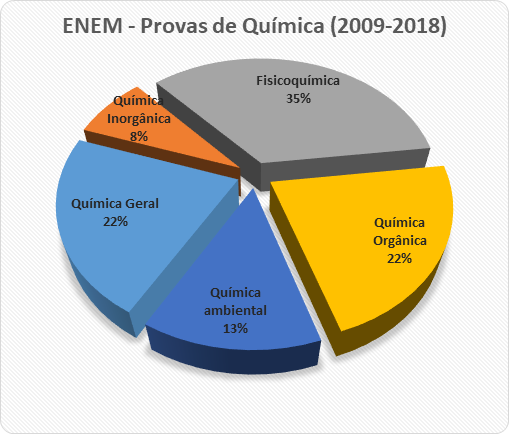Fonte: Estrategia-Concurso
Ambiental
Exercícios:
Química Geral
Átomo: A menor partícula de um elemento.
Prótons (p): Partículas com carga positiva no núcleo. (p = A + n ou e = p)
Nêutrons (n): Partículas sem carga no núcleo. (n = p - A)
Elétrons (e): Partículas com carga negativa orbitando o núcleo. (e = p)
Massa Atômica (A): A massa atômica de um elemento químico aparece na Tabela Periódica geralmente na parte inferior, abaixo do símbolo do elemento. Ela é expressa em unidades de massa atômica (u) ou daltons (Da), sendo 1 u aproximadamente igual à massa de um próton ou nêutron.
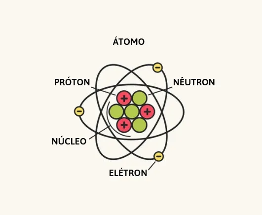Fonte:Brasilescola
Modelos Atômicos:
Modelo de Dalton: Átomo como esfera indivisível.
Modelo de Thomson: Átomo como "pudim de passas".
Modelo de Rutherford: Átomo com núcleo denso e elétrons ao redor.
Modelo de Bohr: Elétrons em órbitas quantizadas.
Mecânica Quântica: Distribuição probabilística dos elétrons.

Fonte:Brasilescola
Exercícios:
Elemento: Na tabela périodica é de extrema importancia saber localizar e identificar as informações passadas como por exemplo o número atômico, massa atômica, distribuição eltrônica.
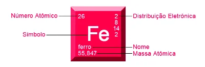
Fonte: todamateria
Períodos: As linhas horizontais da Tabela Periódica são chamadas de períodos. Cada período representa um nível de energia (camada eletrônica) ocupado pelos elétrons nos átomos.
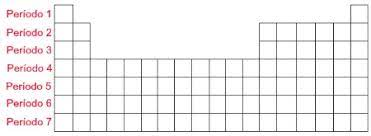Fonte: Mundoeducação
Grupos/Famílias: As colunas verticais da Tabela são os grupos ou famílias. Os elementos de um mesmo grupo têm propriedades químicas similares.
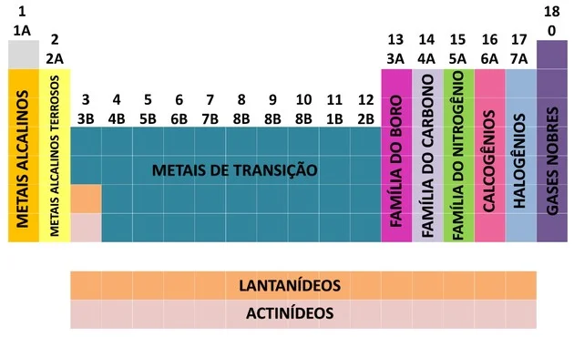Fonte:Todamateria
Eletronegatividade: A eletronegatividade, que mede a capacidade de um átomo atrair elétrons em uma ligação química, também varia periodicamente. Ela aumenta da esquerda para a direita e diminui de cima para baixo.
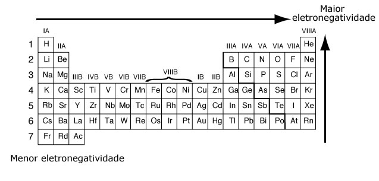Fonte:Infoescola
Metais, Não Metais e Semimetais: A Tabela Periódica é dividida em três categorias principais: metais, não metais e semimetais (ou metaloides). Essas categorias estão distribuídas ao longo da Tabela de acordo com suas propriedades.
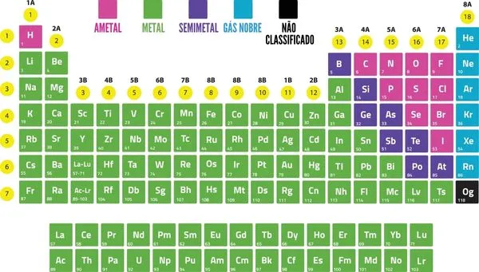Fonte: Brasilescola
Elementos Representativos e de Transição:A Tabela Periódica é dividida entre elementos representativos (ou principais) e elementos de transição, de acordo com suas posições na Tabela e suas camadas eletrônicas preenchidas.
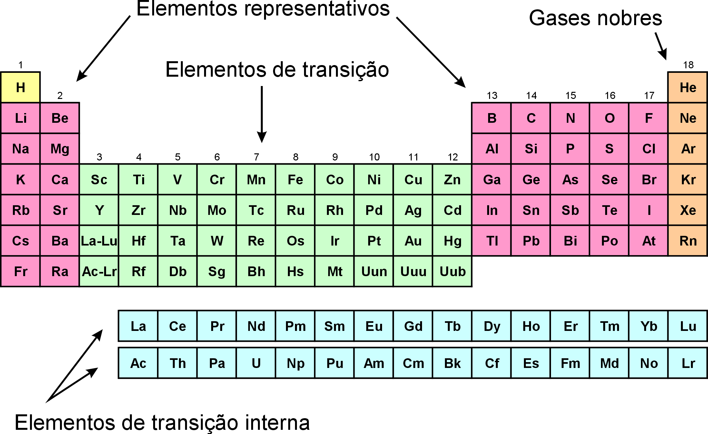Fonte: wikipedia
Camadas Eletrônicas: Os elétrons em um átomo estão organizados em camadas eletrônicas (níveis de energia), numeradas de 1 a 7, a partir do núcleo. A camada 1 é a mais próxima do núcleo, seguida pelas camadas 2, 3 e assim por diante.
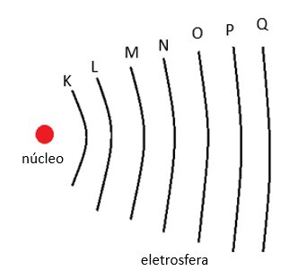Fonte: Infoescola
A camada de valência, também conhecida como última camada ou camada externa, é uma parte importante da configuração eletrônica de um átomo. Ela se refere à camada eletrônica mais externa de um átomo, onde os elétrons estão localizados. A camada de valência desempenha um papel crucial nas interações químicas e nas propriedades dos elementos.
Subníveis:Cada camada é composta por subníveis de energia, que são subdivisões das camadas. Os subníveis são representados pelas letras s, p, d e f. Por exemplo, a primeira camada (n = 1) possui apenas um subnível s, enquanto a segunda camada (n = 2) possui subníveis s e p.
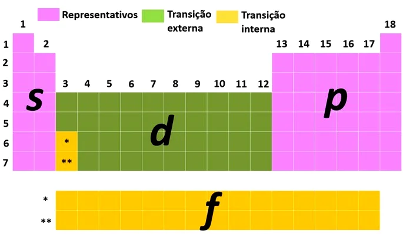Fonte: Todamateria
Princípio de Aufbau: Os elétrons ocupam os orbitais mais baixos (de menor energia) disponíveis antes de preencherem orbitais de energia mais alta. Isso significa que o subnível 1s é preenchido antes do 2s e do 2p, e assim por diante.
Regra de Pauli: A regra de Pauli estabelece que cada orbital pode conter no máximo dois elétrons, desde que eles tenham spins opostos (para cima e para baixo). Isso evita que os elétrons tenham o mesmo conjunto de números quânticos.
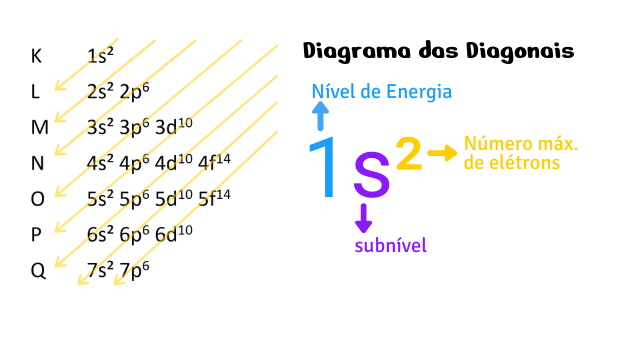Fonte: Vaiquimica
Configuração Eletrônica Notacional: A configuração eletrônica de um átomo é expressa como uma sequência de números quânticos que indicam a ocupação dos subníveis e orbitais. Por exemplo, a configuração eletrônica do oxigênio é 1s² 2s² 2p⁴.
Exercícios:
Regra do Octeto: A teoria do octeto é baseada na tendência dos átomos em realizar combinações para atingir oito elétrons na camada de valência, assumindo uma configuração eletrônica similar aos gases nobres.
Ligação Iônica: Um átomo doa elétrons (íon positivo ou cátion) e outro átomo aceita elétrons (íon negativo ou ânion). Forma compostos iônicos, como sais.
Ligação Covalente: Ocorre entre átomos que compartilham elétrons para alcançar configurações estáveis. Pode ser simples (um par de elétrons compartilhados), dupla (dois pares) ou tripla (três pares). Forma moléculas covalentes, como água e dióxido de carbono.
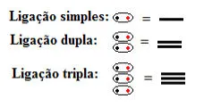
Fonte: uol
Ligação Metálica: Ocorre em metais, onde os elétrons da camada de valência são "delocalizados" e podem mover-se livremente entre os átomos.
conteudo adicional
Ácidos: Os ácidos são substâncias químicas que possuem a capacidade de doar íons H+ (íons hidrogênio) quando dissolvidos em água.
Exemplos de ácidos incluem o ácido clorídrico (HCl), o ácido sulfúrico (H2SO4) e o ácido acético (CH3COOH).
Para saber a força do ácido:
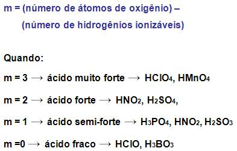Fonte: colegioweb
Nota: ácidos Orgânicos possuem o grupo funcional (COOH), Ácidos inorgânicos possuem o íon H+
Bases: Bases são substâncias químicas que possuem a capacidade de aceitar íons H+ (íons hidrogênio) quando dissolvidas em água, ou seja, elas liberam íons OH- (íons hidroxila).
As bases podem ser classificadas em bases fortes e bases fracas, dependendo da quantidade de íons OH- que liberam.
Exemplos de bases incluem o hidróxido de sódio (NaOH), o hidróxido de potássio (KOH) e o hidróxido de cálcio (Ca(OH)2)
Reações Ácido-Base: Na reação, os íons H+ do ácido reagem com os íons OH- da base, formando água (H2O) e um sal (outra substância).
Um exemplo clássico é a reação entre o ácido clorídrico (HCl) e o hidróxido de sódio (NaOH), que produz água (H2O) e cloreto de sódio (sal de cozinha, NaCl).
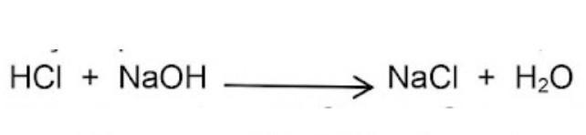Fonte: topblogtenz
Os óxidos são compostos químicos formados pela combinação de oxigênio com outro elemento. Eles desempenham um papel crucial na química e na natureza.
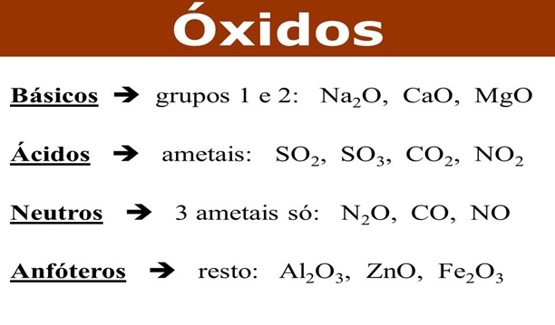
Fonte: trabalhosparaescola
Óxidos Básicos: Os óxidos básicos, também conhecidos como óxidos metálicos, são compostos que consistem em oxigênio ligado a um metal.
Exemplos: óxido de cálcio (CaO), também chamado de cal, e óxido de sódio (Na2O).
A nomenclatura tradicional utiliza o nome do metal seguido da palavra "óxido".
Óxido de cálcio (CaO)
Óxido de potássio (K2O)
Óxidos Ácidos: Os óxidos ácidos, também chamados de óxidos não metálicos, são compostos formados pela combinação de oxigênio com elementos não metálicos.
Exemplos notáveis são o dióxido de enxofre (SO2), que forma ácido sulfúrico (H2SO4) em contato com a água, e o trióxido de enxofre (SO3), que reage para formar ácido sulfúrico também.
Quando o elemento forma mais de um óxido, os prefixos "hipo-" (para o menor grau de oxidação) e "per-" (para o maior grau de oxidação) são adicionados.
Exemplos:
Dióxido de enxofre (SO2)
Trióxido de enxofre (SO3)
Óxido de nitrogênio (III) ou óxido nítrico (NO)
Óxido de nitrogênio (V) ou pentóxido de dinitrogênio (N2O5)
Outros Tipos de Óxidos:
Óxidos neutros: Alguns óxidos não apresentam caráter ácido ou básico quando dissolvidos em água. Um exemplo é o dióxido de carbono (CO2).
Peróxidos: São óxidos que contêm o íon peróxido (O2²⁻). O peróxido de hidrogênio (H2O2) é um exemplo importante.
Anfóteros: são óxidos que possuem um comportamento ambíguo, pois frente a um ácido eles se comportam como um óxido básico; e na presença de uma base se comportam como óxidos ácidos.

Fonte: brasilescola
A geometria intermolecular refere-se à disposição espacial das moléculas em relação umas às outras e como as forças intermoleculares influenciam essa disposição.
Linear: As moléculas estão dispostas em uma linha reta. Isso ocorre frequentemente em moléculas com ligações duplas ou triplas, como dióxido de carbono (CO2).

Nota: Compostos como HCl (ácido clorídrico), HF (ácido fluorídrico) e HBr (ácido bromídrico) apresentam uma geometria molecular linear.
Angular ou dobrada: As moléculas têm um ângulo entre elas, resultando em uma forma angular. Isso é observado em moléculas com pares solitários não ligantes, como água (H2O).
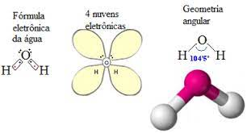Fonte: mundoeducacao
Piramidal trigonal: ocorre quando uma molécula possui um átomo central ligado a três átomos periféricos, formando um plano triangular e um átomo adicional posicionado acima ou abaixo deste plano. Um exemplo comum é a molécula de amônia (NH3)

Fonte: aprovatotal
Trigonal Plana: A geometria trigonal plana ocorre quando uma molécula tem um átomo central ligado a três átomos periféricos, mas todos os átomos estão no mesmo plano, formando um triângulo plano. Um exemplo é a molécula de BF3 (trifluoreto de boro)
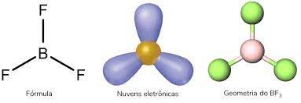
Tetraédrica: As moléculas têm quatro átomos ao redor de um átomo central, com ângulos iguais entre eles. Um exemplo é o metano (CH4).
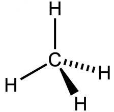
Fonte: unesp
Exitem outros tipos de geometria intermolecular:
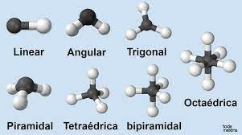Fonte:mundoeducacao
Exercícios:
Calor de Reação: Refere-se à quantidade de calor envolvida em uma reação química. Pode ser exotérmica (liberando calor para o ambiente) ou endotérmica (absorvendo calor do ambiente).
 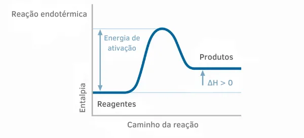
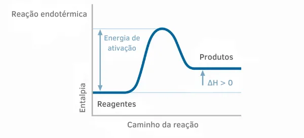
Fonte: brasilescola
Energia de ativação é a energia mínima necessária para uma reação começar a ocorrer
Quando o ΔH for maior que zero, a reação será endotérmica; e quando o ΔH for menor que zero, a reação será exotérmica.
Entalpia: Representa a quantidade total de energia de um sistema, incluindo tanto sua energia interna quanto a pressão e o volume do sistema. A variação de entalpia (ΔH) está associada à quantidade de calor trocada a pressão constante.
Lei de Hess: Afirma que a variação total de entalpia para uma reação química é independente do percurso da reação, desde que os estados iniciais e finais sejam os mesmos.
Para calcular a entalpia da reação, você pode utilizar a fórmula ∆H = HP - HR, onde ∆H representa a variação de entalpia. Em outras palavras, ∆H é igual à entalpia dos produtos menos a entalpia dos reagentes.
Exemplo:
Equação da reação:
2H2(g) + O2(g) → 2H2O(g)
∆H°f (H2O) = -286 kJ/mol (entalpia de formação da água)
∆H°f (H2) = 0 kJ/mol (entalpia de formação do hidrogênio)
∆H°f (O2) = 0 kJ/mol (entalpia de formação do oxigênio)
aplicando a formula (∆H = HP - HR)
HP = (2 mol H2O) * (-286 kJ/mol) = -572 kJ
HR = (2 mol H2 * 0 kJ/mol) + (1 mol O2 * 0 kJ/mol) = 0 kJ
Neste exemplo, a variação de entalpia (∆H) para a reação de formação da água é -572 kJ. Como o valor de ∆H é negativo, isso indica que a reação é exotérmica, liberando energia na forma de calor para o ambiente.
Lei da Conservação de Energia: Estabelece que a energia não pode ser criada nem destruída, apenas transformada de uma forma para outra. Isso se relaciona com as variações de energia nas reações químicas.
Calorimetria: É o estudo da medição de calor envolvido em reações químicas. Um calorímetro é um dispositivo usado para medir essas variações de calor.
Variação de Entropia: Refere-se à medida da desordem ou aleatoriedade de um sistema. A variação de entropia (ΔS) também está relacionada à direção em que uma reação é mais provável de ocorrer.
Exercícios:
O número de oxidação, também conhecido como NOX, é um valor ligado à carga elétrica dos átomos em um elemento que está presente em uma substância.
Nox do Oxigênio: oxigênio: -2 (geralmente)
peróxido: -1 exemplo: Na2O2
superóxido: -1/2 exemplo: KO2
Nox do Hidrogênio: hidrogênio = +1
hidretos metálicos: -1 exemplo: NaH
Nox Fixo:

Fonte: mundoeducacao
Nox Variável:

Fonte: descomplica
Nox de Substância Simples: Substâncias simples consistem em apenas um elemento, como N2, O2, Na... Nessas substâncias, o número de oxidação é zero
Nox de Compostos Orgânicos:
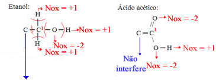
Fonte: descomplica
Etanol:
Ganhos: 3eletrons de cada hidrogênio;
Perdas: 2 elétrons para cada oxigênio;
Total: Ficou com 1 elétrons a mais, assim, seu Nox = - 1
Ácido acético:
Ganhos: 1 elétrons de cada hidrogênio;
Perdas: 4 elétrons para cada oxigênio;
Total: Ficou com 3 elétrons a menos, assim, seu Nox = +3
conteudo
conteudo adicional